Chapter 8The War Catches Up
On New Year’s Day, 1944, hundreds of planes passed overhead and the air-raid sirens began to wail. There was the sound of machine-gun fire as the fighters engaged in dogfights. We were herded into the dungeons, which served as air-raid shelters, and immediately were attacked by hordes of fleas. They made life miserable and I vowed to do everything I could to keep out of the shelters in future raids.
I avoided retreating to the shelters for quite a long period. First I hid between the blackout board and the bars on the window. When this was discovered, I tried hanging half of my body over the inside edge of my top bunk and pulling a blanket over myself and the edge of the bunk. This worked for a long time until an enterprising guard stood on the edge of the bottom bunk and prodded the blanket with his rifle butt.
I spent hours devising means of concealment, only to have one after the other discovered. Each time I’d receive the butt of a rifle for my efforts and finally the time arrived when I ran out of hiding places and had to join the others in the dark and damp cellars. What made these trying periods worse was not having food or drink, as we could not leave the shelters until the all-clear siren was sounded. Often, we would have just got out and sighed with relief when the siren would blare again and we’d have to go back down.
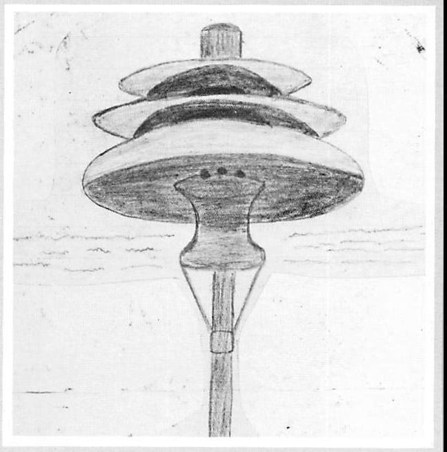
The planes passed over night and day, and while watching the many dogfights overhead, with planes tumbling from the sky, trailing black smoke, I was reminded of the Battle of Britain. In those days in England, it had been a pleasure to watch as our boys beat the hell out of the German Air Force. Now there was a feeling of apprehension. We were really happy to see them but having your own side drop bombs nearby leaves you with a helpless feeling.
The raids continued throughout the spring and seldom a day passed without the sirens forcing us to the underground shelters. Hundreds of planes were constantly overhead, headed for the big cities to drop their loads. Now and then the building would shudder as disabled bombers jettisoned their bombs in the nearby fields.
It was a trying time and hard on the nerves, not only because of the raids. The German rations for POWs had been cut back and the food situation was getting serious. Some prisoners rummaged through the kitchen garbage pails for potato peelings or any other scraps of food. A notice was posted by the senior officer to cease this practice, as it was beneath the dignity of British soldiers. The order had a sobering effect and most of the hungry prisoners obeyed and tightened their belts over their rumbling stomachs.
In early April, word came through the grapevine that seventy-six air force officers had made a mass escape from Stalag Luft III. The escape was effected in March and later we heard that fifty of the prisoners had been shot and killed after recapture. The Germans stated that some of the men had resisted recapture and others had tried to re-escape while being transported back to prison camp. These were German lies to cover up out-and-out murder. We knew there was no way that so many men would act so foolishly or try to escape on the spur of the moment. At a later date we heard that most of the remaining escapees had been returned to the prison camp, except for three men who had somehow managed to get away.
This event made us realize fully just how ruthless these bastards could be. We had always known that escaping was dangerous and that being shot and killed while in the act was a possibility, a risk you took. What was so hard to swallow was the shooting of unarmed soldiers after recapture. We knew it could happen, especially if someone was caught by SS men or the ruthless Hitler Youth fanatics, but we dismissed it from our minds and honestly felt that it wouldn’t happen to us. What we didn’t know until after the war was that Hitler had issued an order on March 4, 1944, called the ‘Bullet Decree’, which stated in part that recaptured prisoners ‘other than British or American’ were to be turned over to the SD for execution.
It also wasn’t until after the war that I learned of the concentration and death camps throughout Germany and other occupied countries, even though Buchenwald, one of the more notorious, was situated only seventy kilometres from our camp in Mühlhausen. Ironically, Buchenwald was only five or six miles from Weimar, a shrine of German culture and ‘freedom’, and Weimar itself was in central Germany adjacent to Jena and Erfurt. I had been in all of these towns little realizing the degradation and inhumanity that went on not too many miles away.
I had seen the starved skeleton-like Russian soldiers in Stalag VIG and I’d witnessed the loading of political prisoners’ bodies at Haina, but on reading the atrocious history of this particular camp—the beatings and the starvation of its inmates, the barbarous acts of ‘head-shrinking’ and the collecting of skin bearing tattoos from murdered prisoners so the commandant’s wife could make the skin into lamp shades and book covers—I find it hard to believe that we prisoners never heard a whisper of what took place there. But the fact remains that this was the case.
On June 5, a British POW, one of the originals held since Dunkirk, calmly walked through the open gates as the potato wagon rumbled in. The surprised guard watched him with mouth agape, not believing his own eyes. He finally realized what was happening and let out a yell, alerting the others in the nearby guard house. They came tumbling out and raced down the road after the fleeing prisoner. We figured that to walk out in broad daylight, right under their noses, was a spur of the moment act of sheer desperation brought on by the long incarceration and the increasing tension within the camp. After about two hours, the man was dragged back to the camp, bleeding from the ear and the side of the head, where he had been beaten with rifle butts. That evening, he was taken to the hospital and we learned later that he escaped from there and was killed under a moving train.
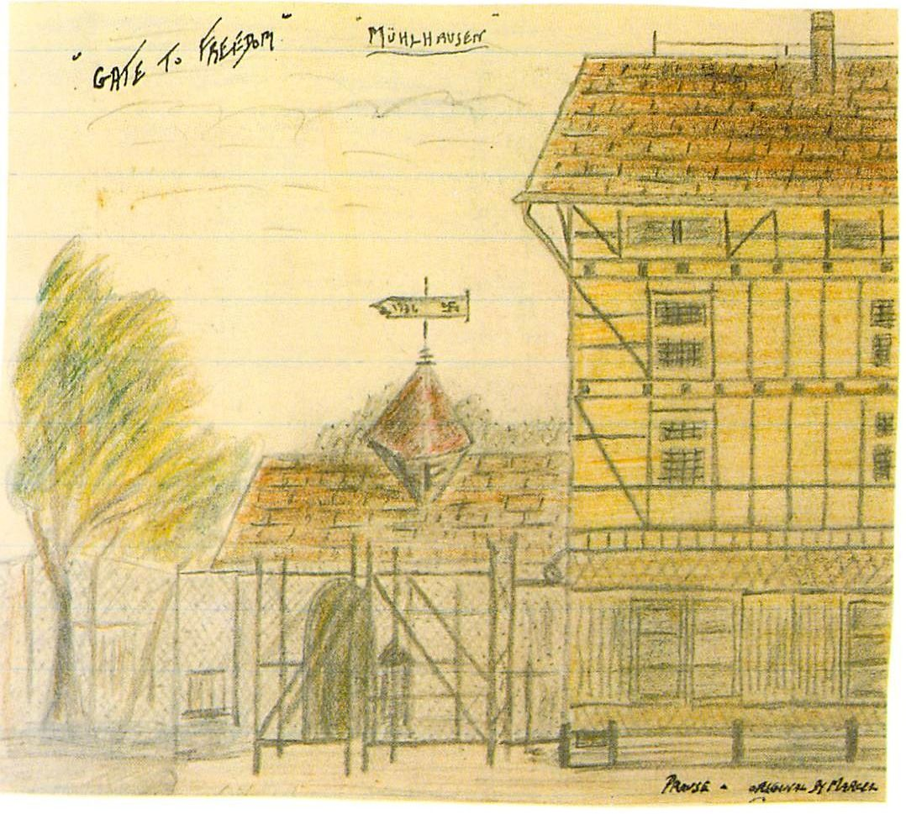
On June 6, we heard the welcome news that the Allies had landed in France, creating a second front. This was the first really encouraging news in months and it gave the whole camp a new feeling of hope. That same month, thirty-five Canadians in the camp received their first ribbons, the CVSM (Canadian Volunteer Service Medal for eighteen or more months overseas). Being our first medal, we wore it proudly and got the feeling that we hadn’t been completely forgotten. These two events were the only positive ones, however, at that time.
With all the activity, news, rumours and propaganda, I had completely forgotten the consequences of my escapes. This was brought home to me on June 26, when I received a sentence of twenty-one days’ solitary confinement, on bread and water, for my first escape. With the experience of the seven days that I had served previously still fresh in my mind, I wasn’t looking forward to being locked up again. There was nothing I could do about it though, and on July 9 I began serving my sentence.
This time I put salt in all of my pockets to sprinkle on the black bread to make it taste a little better. It’s wonderful what the imagination can accomplish. With the help of the salt I could close my eyes and turn the bread into different tasty dishes. I’d try steak one day and pork chops the next. After a few trial runs the bread actually tasted like whatever I imagined it to be.
Alone in the cell, the time seemed endless and the only really active thing was my mind. I would go back in time and relive my fondest memories. I would concoct wild plans of escape and let my imagination run wild. I was allowed books as they became available, but most of them were missing pages and were dog-eared and torn. My main pastime was writing poetry, or at least doggerel, and breaking down the days into minutes and seconds to keep in mind how long it would be before I finished my sentence.
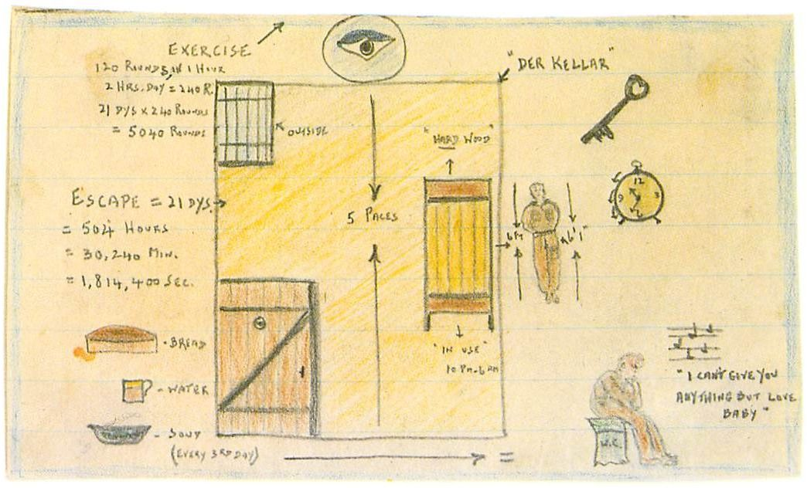
I tried not to aggravate ‘Plank-face’ on his duty days, especially since he kept threatening to get me sentenced to an extra seven days whenever he could smell smoke. I was careful not to get caught smoking the few cigarettes that had been smuggled to me, but I just couldn’t resist smudging the eye in the door with whitewash. He still couldn’t catch me in the act.
My hips got sorer with each passing day from sleeping on the bare boards and I had a constant stiff neck from my pillow of two books. Every third day, according to regulations, I was given a hot bowl of soup, either cabbage or potato. It wasn’t much but it was the only event to look forward to. The only good thing about my stay was that I didn’t have to jump up at night to go to the air-raid shelters during the continuing heavy raids.
My big worry was that I had another sentence of twenty-one days hanging over my head for the second escape. I tried to dismiss it from my thoughts. I dreaded this period of being absolutely alone, when the mind starts playing funny tricks. Could I take it? That question was uppermost in my head. At the end of the month, I was released from my cell and was elated that I still had all of my marbles!
Shortly thereafter, new Canadian prisoners began to arrive in camp for the first time since Dieppe. They were from a parachute regiment dropped over Arnhem, and from what we could learn the drop was less than a success. They were welcomed to a less than happy camp.
Later, we received news over the short-wave set that Anthony Eden, in a recent speech, had condemned the Germans for murdering escaping POWs. The German answer was to post a notice on our bulletin board stating that German civilians would shoot and kill any escaping prisoner, in revenge for the heavy bombing of their cities. The next day we heard that two prisoners had been killed for assaulting a guard and two others while attempting escape. It was evident that the Jerrys were getting jumpy with the constant bombing and with the knowledge that the Allies were starting to turn the tide. Another notice went up stating that we would be shot without warning if we left our rooms at night or stepped over the trip wire in the daytime.
Letters were received in the camp from the DUs repatriated to England. They advised us that two of their number had been court-martialled, one receiving two years for collaborating with the Germans and another ten years for the same offence as well as for impersonating an officer while a prisoner of war. I knew of at least two more who would meet their own fate when we got out of this!
August 19, 1944, the second anniversary of Dieppe, was celebrated with a three-hour air raid and the news of two more escapees reaching the French border only to be shot and killed. On September 10, as the air raids continued, two fighter planes were shot down and crashed nearby and bombs fell on the town of Mühlhausen, killing ten civilians. On the 12th, more bombs hit the town and thirty more were killed. Giving the heavy bombing as a reason, the Germans cut our Red Cross parcels to a half parcel a week. We took this to be good news. The planes were hitting their depots and marshalling yards.
During this period, a leaflet circulated throughout the POW camps showed that the Jerrys definitely had the wind up. The leaflet declared: ‘As a result of repeated applications from British subjects from all parts of the world, wishing to take part in the common European struggle against Bolshevism, authorization has recently been given for the creation of a British volunteer unit.
The British Free Corps publishes herewith the following short statement of the aims and principles of the unit.
1. The British Free Corps is a thoroughly British volunteer unit, conceived and created by British subjects from all parts of the empire, who have taken up arms and pledged their lives in the common European struggle against Soviet Russia.
2. The British Free Corps condemns the war with Germany and the sacrifice of British blood in the interests of Jewry and international finance, and regards the conflict as a fundamental betrayal of the British people and British Imperial interests.
3. The British Free Corps desires the establishment of peace in Europe, the development of close friendly relations between England and Germany and the encouragement of mutual understanding and collaboration between the two great Germanic peoples.
4. The British Free Corps will neither make war against Britain or the British Crown, nor support any action or policy detrimental to the interests of the British people.’
They insulted the intelligence of POWs by expecting us to believe this nonsense. The only result in our laager was one of ridicule and laughter. No one I questioned could name a single member of this so called ‘corps’.
On September 17, five more POWs were killed while attempting to escape from one of our work camps. On the 26th, a bomb hit near our camp but there was no damage or injuries. Two days later, with hundreds of planes overhead, the town was hit again and the Jerrys took a work party of POWs from our camp to help dig up the dead and injured. Our Air Force was inflicting heavy damage on all of the major German cities, with reports of thousands being killed, and evacuees were pouring into Mühlhausen from the larger centres. Our work parties claimed that they were very hostile towards prisoners.
Another notice was posted on our bulletin board stating that, if escaping prisoners were caught in civilian clothing, they would be shot immediately as bandits, spies or saboteurs.
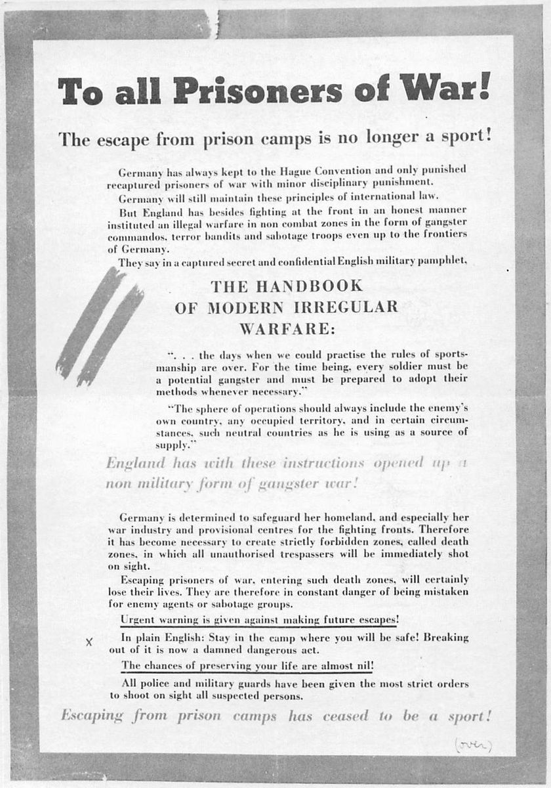
On November 25, we received the news that over 250 prisoners had been killed in a bombing raid on one of the work kommandos. We couldn’t find out if it was a British or European camp. The air attacks were almost continuous and we spent more time in the shelters than above ground. In November, there was seldom a moment that heavy bombers with fighter escorts were not seen overhead and, on November 26, when I avoided going to the cellars by finding a new hiding place, I counted over 2,000 passing planes before tiring of the game and settling in to watch the constant dogfights.
The search for new hiding places during the raids continued. The dungeons were becoming unbearable. On December 1, our whole room of twelve men received twenty-one days strafe for not retreating to the shelters.
The camp at this time was alive with rumours. The latest one was that parachutists had been dropped in the area to act as fifth columnists. There was no doubt that the Allies were getting closer every day, and our main concern was to stay alive until they could reach us.
On December 14, we were ordered to draw the remainder of our Red Cross parcels from storage and were advised that there would be no more issues as Geneva was completely out of them. The bombing of depots and trains was again given as the reason. It looked like it was going to be a poor Christmas and a hungry winter!
Earlier that year, the camp had been cut off from receiving the German issue of coal briquettes, which were actually compressed coal dust. Each room had been getting three briquettes a day, not enough for warmth but at least enough to brew a tin can of water for tea. We had gradually burnt every piece of spare wood we could lay our hands on, including the bed slats that held our palliasse in place. It was a favourite sport to steal bed slats from other rooms and there was always a laugh at night when an unlucky prisoner whose bunk had been left with only two or three slats collapsed onto the man underneath. It wasn’t so funny when you did the collapsing.
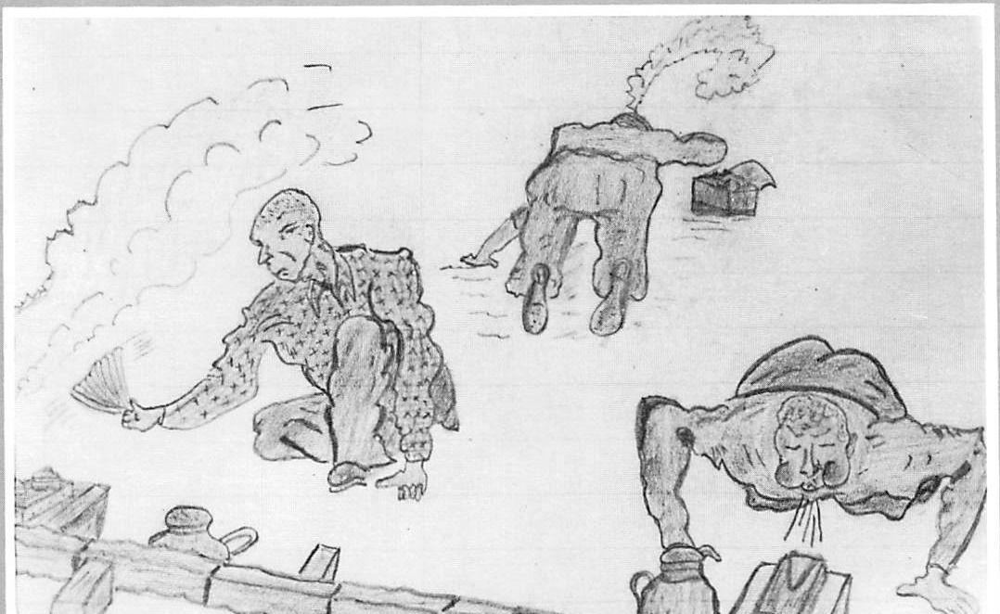
To offset this shortage, a wood party was formed to go out two or three times a week to dig up stumps from a forest about four kilometres from the camp. During these trips we were on an honour system not to escape as the wood was for our own benefit, even though the Germans used to insist on having two or three stumps from the load of about twenty that we gathered per trip. We had the use of an old sway-backed horse and a dilapidated four-wheeled wagon. The horse could handle the empty wagon but we had to help him with a full load. The poor creature didn’t last long. He died on us, leaving us to do our own hauling. This was accomplished with the use of long ropes and about twelve to fifteen men.
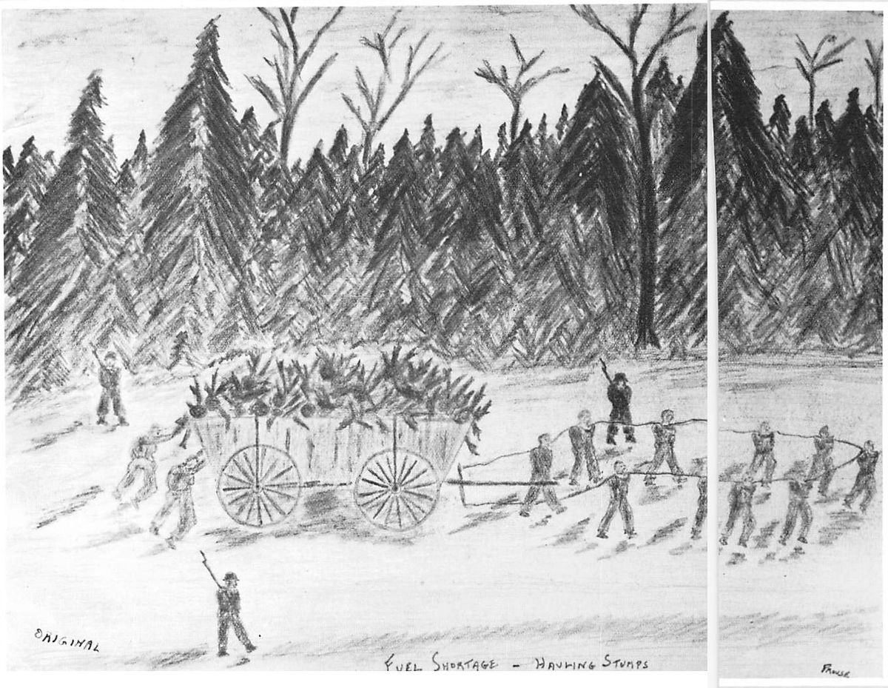
One day, when we reached the wood we were surprised to see that the surrounding evergreens had the appearance of decorated Christmas trees, with silver strips glistening in the reflected sunlight. It was some time before we learned from a new Air Force prisoner that tin foil was being dropped to interfere with the use of German radar in spotting and locating Allied planes.
We welcomed the trips, which were more of a pleasure than a hardship, and we knew that escapes would be foolhardy, what with the Allied advance and constant bombing, plus the increasing itchiness of the Jerrys’ gun fingers. The trips meant being away from the camp for the better part of a day, out in the fresh air and open surroundings of the forest. Another bonus was that the work party received an extra ration of bread and a tin of jellied horse meat to be shared between three men. This was the first meat that the Germans had given us and it had one of the sweetest and tenderest tastes that I had ever sampled. We learned later from one of the guards that the meat came from Argentina for the German army and was part of their rations until a number of them became sick from food poisoning. After a couple of them died, the tins were condemned for army consumption and in some mysterious manner had turned up at our camp. This was their loss and our gain, as not one of us had any problems.
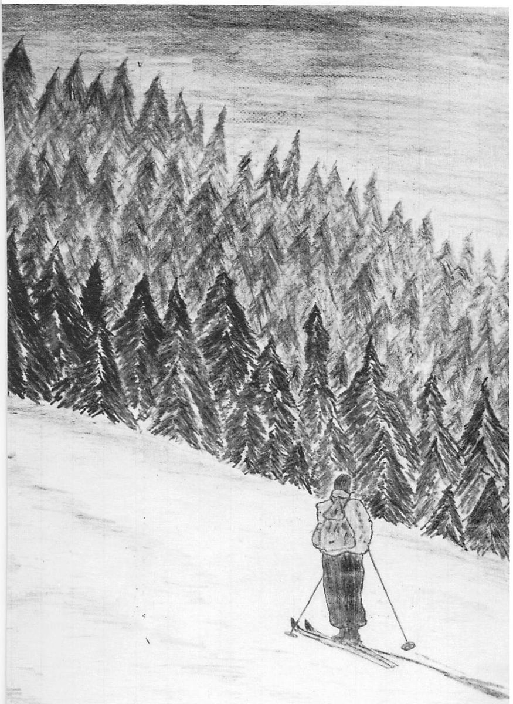
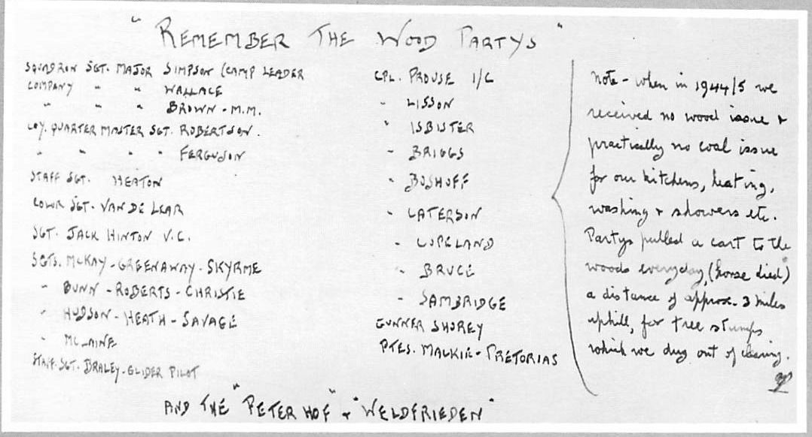
The best part of the trip was the noon break, when the guards wanted to eat their lunch and have a beer in nearby Peterhof, a guest house (roadside pub). They couldn’t leave us unguarded, so they would take us in the back door, where we had the use of a separate room and were able to buy beer by bribing the guards with Canadian cigarettes.
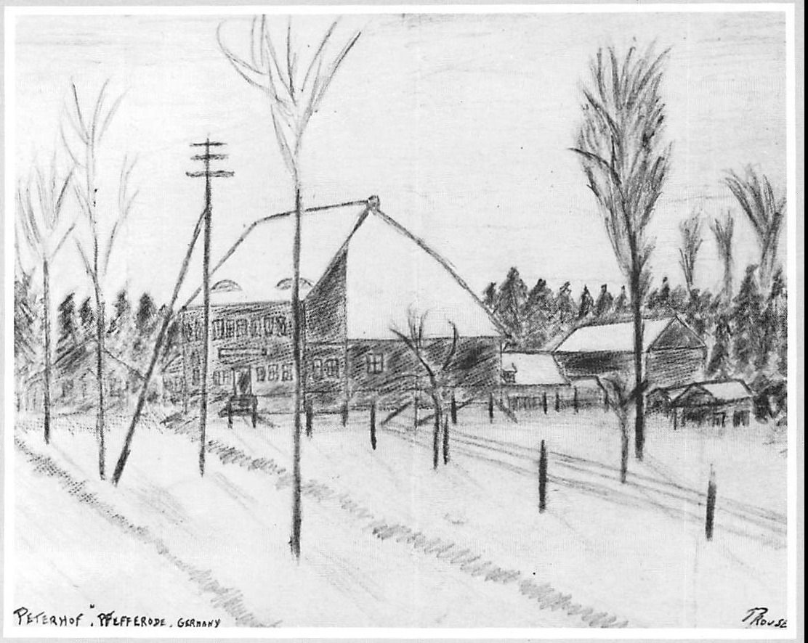
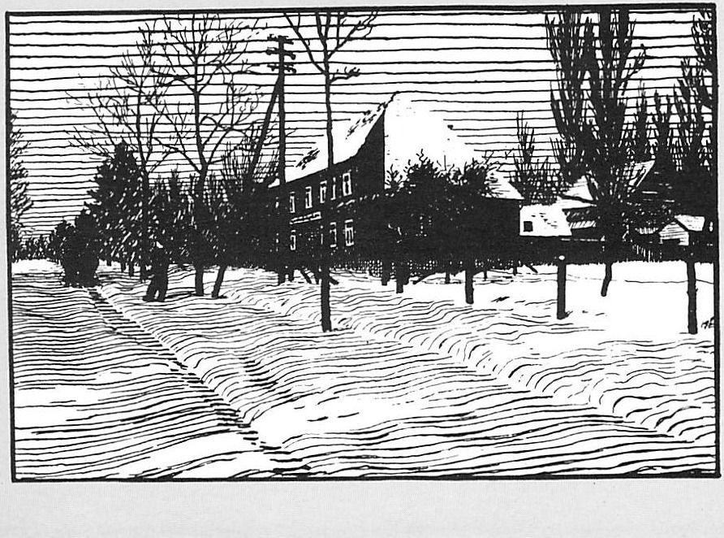
The woman innkeeper, who was fat and motherly, soon became used to us and we were able to trade with her now and then the usual Red Cross cocoa for brown bread. We asked her for eggs, having noticed some chickens out back. This she refused, evidently because they were too scarce. On one of our trips, on a visit to the washroom I climbed out of the window and managed to swipe two eggs from the hen house. That night each man in our combine of four had half an egg, a real trip to heaven and better than an orgasm. The others clustered around, having to be content with the smell of the frying eggs.
On December 25, 1944, we celebrated our third Christmas as POWs. On the 27th one of the boys was found dead in his bunk, a hell of an ending for a soldier! He was one of the Dunkirk men, and after so long in captivity his heart had finally failed.
By December 31, I had noted 115 raids for the month and on January 1, 1945, the sirens wailed again to start the New Year off on the right foot. The month of January gave us some respite from the cellars, as the alarm only sounded seventy-two times. We wondered if the bombing slowdown had any meaning, but the heavy raids started again in February.
It was remarkable how the prisoners stood up to the constant fear of being killed by a direct hit. Nerves were on edge, what with the lack of sleep and food and the many hours spent in the cellars, but morale in general was excellent. There were some who trembled visibly and had the wind up, but they were actually very few considering the large number of men in camp. No one ridiculed or blamed these men. Most went out of their way to talk with them and to sympathize, trying to get their minds away from the growing thoughts of impending doom.
Death was all around us. Another direct hit was scored on the town of Mühlhausen and nearby Gotha was heavily damaged with over four hundred killed, including eleven more POWs.
We continued our wood parties. One morning, on our way to the forest, we passed hundreds of evacuees fleeing from the larger cities. Most of them ignored us; a few glared in open hostility. Two or three spat at us as we passed and we were glad to reach the woods and the feeling of safety in its surroundings. During the morning, I dodged the guards and slipped deeper into the woods. I made a huge circle and came to the edge of the road where I watched for a German civilian whom I had approached on a previous trip. He had been gathering wood and I had asked if he wanted to trade bread for cocoa. He had agreed but seemed very nervous and I wasn’t too sure if he would turn up. I couldn’t be away from the wood party too long and was ready to give up when he came into sight. I whistled from the woods but he passed by without looking. I had to follow him for almost half a mile before he would venture into the woods. We quickly traded and he told me how scared he was of being caught. I got two loaves of bread for a tin of cocoa and stuffed them up the back of my tunic. I asked him to trade again on a future trip, but he was too frightened and scurried off. I finally got back to the group and one of the guards spotted me entering the clearing. He shouted, wanting to know where I had been. I told him that I had had to take a crap and had felt sick, then offered him a cigarette to cool him down. He accepted and told me to get back to work. I rejoined the gang, who knew what I had been doing and had tried to cover for me.
On the return trip, my luck continued. I was the first to spot a large Belgian hare that had been run over and squashed flat by a truck. I scooped it up and hid it in a burlap bag of twigs that we used for starting the fires. That night, we threw the whole carcass into a pot, after cutting off the head, then boiled it with potatoes. We strained the fur out and the end results were excellent, making a soup that had grease bubbles with the distinct taste of meat.
During February, there was no respite from the bombing and the planes were now flying so low that we could read the markings. We learned that Arnstadt, Weimar and Jena were all heavily damaged and we could hear the crash of bombs much more distinctly than previously. There were more dogfights accompanied by the staccato sound of machine-gun fire and more planes were crashing in the area.
The attacks appeared to be centred on the area of Thüringen and, on our trips to the woods, we learned that the coal and gas supply to civilians had been cut off. On each trip we saw more and more civilians gathering wood and twigs.
On February 16, martial law was declared and it appeared that Germany was being bombed to its knees. The feeling in camp was one of excitement and elation, knowing that the end wasn’t too far away. This feeling was heightened as more and more people were seen on the march. There was a continuous stream passing our building, including prisoners on the march from Poland and eastern Germany, as the Germans fell back from the Russian advance.
The sick prisoners, unable to march further, were dropped off at our already overcrowded camp. They were in very poor condition, suffering from dysentery and malnutrition, and they reminded me of the Russians we had seen at Stalag VIG. Trucks arrived daily with men who had dropped out of the march. In some cases, they were piled like cordwood with the bottom layers being dead. The camp doctor and medics did their best with the meagre supplies available but, for many, it had been their last trip. The German papers claimed that many of the marching prisoners had been killed by machine-gun fire from Russian planes.
On March 3, 1945, a notice was posted that read: ‘TAKE YOUR CHOICE
If Germany collapses she will become Bolshevik. Other countries of the continent are on the way to becoming Soviet Republics. England will find herself isolated against a Soviet Europe and a Soviet Asia, from the Atlantic to the Pacific.
This will be the end of your empire.
Only a union of all European nations and their common co-operation with the British Empire can safeguard the existence of Europe, of her tradition and her civilization against an aggression from Siberia.
The very existence of the empire will then be secured and a permanent peace will be guaranteed for our continent after a long period of bloody fratricidal wars.
The present war consequently will be the last European conflict.
Soldiers of all European countries are fighting for this aim united in the "European British Peace League".’ This, to us, was along the same lines as the call to join the ‘British Free Corps’. The Jerrys would supply you with a German uniform, with a Union Jack on the sleeve and a ‘British Free Corps’ shoulder patch. All you had to do was volunteer to fight the Russians! They should have known better than to make such an offer. On a previous occasion, when they had learned how well the German prisoners were treated in Canada, they had posted a notice offering all Canadian prisoners a chance to move to a separate and better camp for the use of Canadians only. This order was turned down flatly by the senior Canadian representative and the Germans were advised that we were all one and the same and, if the whole camp was not included, we didn’t want any part of it.
Another offer made periodically was a trip to Berlin for any prisoner who agreed to speak on the radio, telling the folks back home how well we were treated. Unfortunately, some men did take advantage of this, just to ease the monotony of prison life. They were very few in number and were marked men from then on.
On March 5, Weimar was bombed and sixty prisoners were killed out of the thousands on the march. Our camp, which normally held 500 men, had swollen to more than 1,000 with additional prisoners arriving daily. Twelve more arrived on that day, the survivors of a group that started out with forty-two. Thirty of them died on the march, some from dysentery and others from the machine-gunning planes.
On March 7, medics were sent from our camp to the nearby woods to retrieve the bodies of seven airmen shot down in dogfights. It was sad to see men cut down in the prime of their lives but we couldn’t dwell too long on these happenings and keep our sanity. Death was becoming a daily affair and each man fought for his own survival. The only good news of the day was that Dresden had been flattened.
On March 14, the camp was completely out of wood. Once again, fifteen of us left for the usual trip to the woods for stumps. On our return, the guards came out to take their share. The whole load consisted of around twenty stumps, which were loaded with the larger ones on the bottom of the high-sided wagon. The roots were all interlocked, making it difficult to unload. This was planned in advance with the idea of letting the Jerrys have only the small stumps on the top of the load. This time our plan backfired as an Unteroffizier (equivalent of a sergeant) supervised the operation and had the guards unload the whole wagon. He grabbed the three largest stumps and this started an argument, as there were far more prisoners waiting for wood than Jerry guards. I got involved in a heated argument with one officer and we stood nose to nose in a shouting match. I thought I was getting the best of the argument (I had a larger nose) but he was outdoing me in the screaming department and finally pulled his pistol from its holster and started waving it in my face.
The noise of the argument brought the confidant man out of the camp and he quickly stepped between us, telling me to cool it as the Jerry was threatening to shoot me. This made me all the more angry and I dared the bastard to pull the trigger, shouting that I’d kill him before I went down. I don’t know what the outcome would have been if the Commandant hadn’t come on the scene and called us all to attention. He literally screamed at the officer to put his gun away and ordered the guards to put us inside the camp. I guess I lost the argument—they wound up with the three largest stumps.
The following day, we watched from the cell windows as thousands of prisoners marched past us in flight from the eastern camps. They had to leave almost two hundred in the town of Mühlhausen who could no longer continue the march. Ten of the worst cases were brought to our overcrowded camp and several of these were dead the next day.
On the 19th, we received anti-typhus injections. Lice were now in the camp, brought in by the daily arrivals. On the 21st there was a further cut in the German rations. We now received a two-kilo loaf of bread between nine men per day. On the 22nd, we had a burial for fourteen men. Some were airmen who had been shot down, the rest were prisoners who came in off the march. On this same day we could hear the sound of big guns in the distance. This gave us a much needed lift and we were further encouraged by the underground news that the Allies had crossed the Rhine. This meant that the Western front was only 200 kilometres away. We had already heard that the Russians on the Eastern front were 300 kilometres away from us.
On the following day, while on our usual wood party, the wagon got away from us on the return trip and two of the gang got broken toes as the wheels passed over their feet. On the 26th we received our second anti-typhus injection. But the big news arrived on March 20 in the form of two POW officers who had marched in a column from Rotenburg. They told us that an Allied spearhead had reached Kassel, only 90 kilometres from our camp. The following morning, the Germans took a large number of prisoners out of the camp on a work party. On their return, we learned that they had been forced to erect road blocks and dig tank traps on the road leading into Mühlhausen.
On March 31, our wood party was cancelled because of the large number of bomber and fighter planes overhead. At 4:30 p.m., as we watched from our cell windows, the planes attacked to the east of the town in the direction of the forest where we usually got our stumps. We figured that the Jerry soldiers had taken cover there. The attack was then centred on the town, where a large German barracks was situated. As night fell, red flares were seen overhead and the sound of machine-gun fire was almost constant. We didn’t get too much sleep that night, listening to the attack and wondering how far the Allies had to go to reach us.
On Easter Sunday, April 1, the air raids subsided. We were getting ready to go to the forest as we desperately needed wood, if not for heat, at least for cooking. Before I began to dress, I indulged my constant habit of jotting down notes and then hiding them for future use. In so doing, I realized that this past month had been the worst for air raids so far, with a total of 179 alarms lasting 235 hours. The longest alert in one day was 16½ hours. No wonder we were getting ‘bomb happy’!
When we were finally ready to go, I noticed that the Jerrys sent more guards than usual with us. We soon found out why. There were endless streams of civilians, evacuees from bombed cities, carrying bundles and suitcases and in some cases pushing prams and other wheeled vehicles containing their worldly belongings. Along the sides of the roads were burned-out German tanks, scout cars and trucks, victims of the constant air raids. As we passed along the edge of the forest, we became aware that the woods were alive with Jerry troops. One of the guards left us to talk to a German officer who stood by the side of the road. When he returned, we heard him telling the other guards that the area was completely surrounded by the Allies and that the other officer had warned him against proceeding any further. The guards halted us, discussed the situation among themselves and then decided to go ahead to our usual stump gathering area, as per their orders.
We had just started digging, when all hell broke loose overhead. One minute the sky was clear and the next it was full of diving and swooping planes locked in a deadly air fight. All the men hit the ground and slowly turned over with faces up to watch the fight. Every plane seemed to have another one on its tail, and the action was so fast we couldn’t tell which belonged to us or the Jerrys. Some planes dived so low in trying to shake off their pursuers that they couldn’t come out of the dive and crashed into the ground with a thunderous roar. Others were shot down and crashed in flames, setting the surrounding trees ablaze. The machine-gun fire was constant and, when all of a sudden the fighting was over, the silence seemed strange and eerie.
Slowly we picked ourselves up. It seemed that everyone wanted to talk at once. There was nervous laughter and then the work proceeded once again as the guards yelled at us to get the job finished as quickly as possible. When we had the wagon half loaded, we suddenly noticed that there were German troops all around us and that our guards were arguing and shouting at them. The air was very hostile and our guards told us that half a wagon was enough. They were having increasing difficulty in keeping the troops from attacking us and had decided to cut the trip short and get back to camp. What with the angry glares and menacing gestures from the Jerry troops, we agreed with the guards completely and only breathed easy when we got back on the road.
We could understand the anger of the German troopers, what with the constant bombing and the knowledge that they were in full retreat. It was only natural that when they saw the uniform of their enemy, they didn’t see khaki, they saw red. We were glad to get back to camp and its temporary safety and to hear the latest news. We were told that a British and French POW camp, taken by the Russians and then recaptured by the Germans, was found with all prisoners murdered, presumably by the Russians. We believed this to be German propaganda and wrote it off as such. We also learned that typhus had broken out in the main camp of Stalag IXC in Bad Sulza.
The heavy raids continued during the night and in the distance we could see the glow of flames lighting up the sky over Eisenach. The sound of guns was getting closer and we finally fell into a troubled sleep. At 2:00 a.m., on April 2, we were rudely awakened and told to prepare for evacuation. We packed our kits with the little food we had left and scrounged around for water bottles.
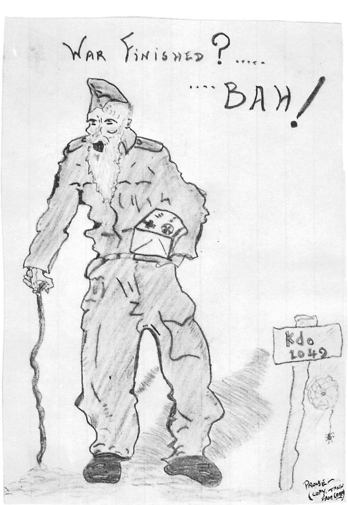
At 8:00 a.m. we left the sick and disabled prisoners behind and marched out of the camp for the last time.